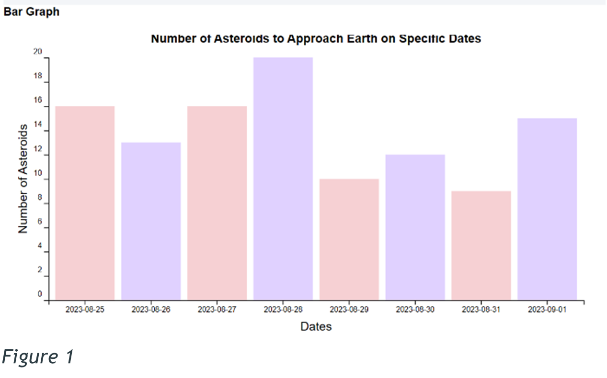
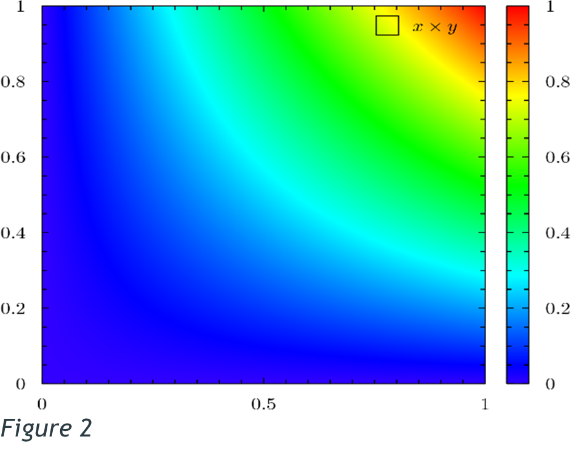
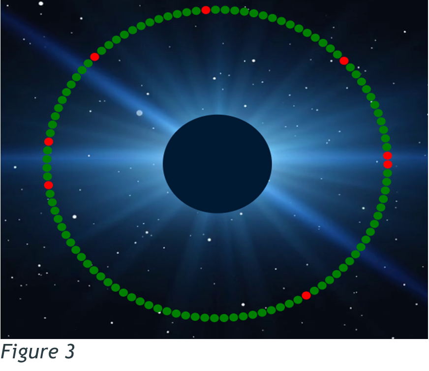
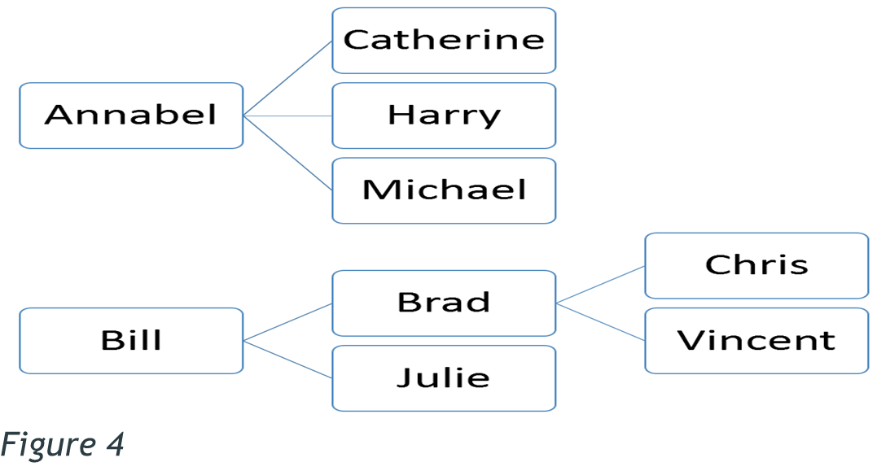

Data Visualization and Data Art:
Kidd in (Theories of Representation, 2015) mentioned that there are forms of computational visual representations emerging, such as data visualization, and they have spread in areas such as media studies. They combine images, symbols, graphical content, and text to tell stories based on data (Kidd, 2015).
According to Viegas and Wattenberg, “Data Visualization is usually viewed as a tool to support Analytic reasoning” (Viegas and Wattenberg, 2007). What that means is that since data visualization focuses more on exploring data and finding new information, lately there has been an interest in artistic data visualization: That is Visualization techniques that can create artworks that, can guide analytical reasoning and encourage deeper critical contextualization with the artworks, suggesting that data visualization can serve as also an artistic expression, challenging the claim that its one of its purpose, is to support analytic reasoning and critical thinking (Viegas and Wattenberg, 2007).
Now that makes Data Visualization an Analytical Tool, as it helps explore data, come up with questions that could help in gaining insights towards other complex datasets (Roeser, 2016)
I also mentioned that Viegas and Wattenberg claimed that Data Visualization also serves as an artistic expression, Now, this is more like Informational Visualization that allows viewers to see data, in a different way than just normal abstract data. We call this type of data Artistic Visualization. In short Data Art.
Now Viegas and Wattenberg define it as “Visualizations of data done by artists with the intent of making art” (Viegas and Wattenberg, 2007). For it to be called Artistic Visualization, it needs to be based on real actual data and nothing less, for example the data can be similar to the Nasa Api Data that we used for our websites, since it contains real data that exists in the world. This type of Data Visualization does not need to be beautiful, Artistic visualization is not seen through beauty, but through its intent. Artistic Visualization originated through software tools, and with the right software and the internet, which is like a database for real data, just about anyone can design an Artistic Visualization.
Artistic Visualization or Data Art, according to Roeser, is a form of expression. It not about just creating a beautiful, artistic, thought-provoking artwork. Its more about how the data and the artistic techniques that are combined attempt to show something, for example a message, evoke some feelings in you and challenge your thoughts (Roeser, 2016).
Artistic Data or Simply Data Art has more or less the same or similar qualities as those of Data Visualizations.
1. All Visualizations should express a strong point of view, so viewers understand them easily. It should be clear and understanding, for if a visualization contains too many things, viewers will not be able to comprehend and understand it. This is why the saying that “Clutter is not good” exists.
2. Both Data Art and Data Visualization should be based on real data and not just some data that no one knows where it came from. For if no one is aware of where the data is from and just uses non-real data, it can be bias and inaccurate. And the Visualization should never be biased or inaccurate for its Power is immense. The way Visualizations are powerful, they “can be used to persuade” someone into doing something (Viegas and Wattenberg, 2007). For example, Advertising is a form of representation that is pervasive in our lives. It uses different strategies to persuade customers, such as wordplay, storytelling, stylized acting, photography, cartoons, and memes. Advertisements are memorable, so their persuasion is more subtle and ambiguous than just flatly lying (Kidd, 2015). Therefore, this is not something that should rely on false information or data, because of this form of visualization getting into the wrong hands, people are getting scammed now, every now and then.
According to Kidd, Representational tools, texts, including images, are constructed. They do not simply just capture reality. Photographers make choices in the framing, point of view, lightning and many other factures that assist. And the images they capture tell multiple stories, and their meanings are shaped within the entire frame. So, it’s also important to consider the relationship between a photograph and reality and the potential for manipulation (Kidd, 2015). Also representation is political, therefore, it must take a neutral stance, for it can make certain groups visible or invisible if it were to be used wrong or cause uproars, like how there was once a clicks commercial that represented black people’s hair as damaged and white people’s hair as healthier, that caused an uproar within the communities, which ended up having to close clicks for a short time till the uproars cooled down. So choosing how you represent something is crucial.
Strategies of Representation:
Both Data visualization and data art use many different strategies of representation to communicate or show information. These strategies include “Visual encoding, colour mapping, special arrangements, and interactive elements” (Roeser, 2016) (Kidd, 2015) (Li 2020). The choice of representation however completely depends on the intended message, audience, and artistic goals. However, by Using these strategies more effectively, both data visualization and data art can communicate information in an engaging and impactful way.
1. Visual Encoding:
Visual encoding is the use of visual elements like, shapes, lines, and symbols to represent data. Different data can be encoded using different visual properties, for example, figure 1 shows how bar charts use the length of bars to represent quantities. All in all, Visual encoding helps viewers interpret the data being presented without really doing too much.
2. Colour Mapping:
Colour mapping involves assigning colours to different data values or categories. Colours can be used to represent different variables, highlight patterns, trends or differentiate between categories. For example, in figure 2, the heatmap uses a gradient of colours to represent varying levels of intensity or values. And in figure 3, the data art previously created for my website, we can see that the circles have been categorised in two colours, red and green, and from the normal discourses, we know that green represents safe and red danger.
 3. Spatial Arrangement:
Spatial Arrangement is how elements are positioned and organized within a visual representation. The arrangements can convey relationships, patterns, or hierarchies within the data. like for example, in figure 4, the tree map arranges the data in a way of nested rectangles, with the first rectangles representing higher positions or authority, e.g., how Bill is in charge of Brad, and Brad is in charge of Chris, etc.
4. Interactive Elements:
Interactive elements allow viewers to engage with the data representation actively. These elements can include zooming, filtering, sorting, or hovering over specific data points to reveal additional information. These elements increase the viewer’s ability to explore and analyse the data from multiple different angles, enabling a more immersive experience.
Data Visualization and Data art use similar strategies of representation, however their approach to them is complex. The techniques mentioned above are used to communicate information and engage the viewers effectively. These techniques are drawn from the fields of design and visual communication to create an effective visual representation. With that, the intended audience and the context of these visualizations play a huge role in shaping these strategies used in data art and data visualization. Data Visualization aim to convey data more efficient and accurate, therefore they target for broad audiences, and data art usually targets a specialized or art-oriented audience since it allows it to be more experimental and use more subjective approaches in its representation.
CONCLUSION
Data Visualizations have become a key area in news media and are aimed at generating knowledge, and potentially changing something somewhere in the world. Context has a huge responsibility in understanding these representations, and advertising also uses various strategies to persuade consumers. Therefore, Data Visualizations as representations, are constructed and they shape our understanding of reality (Kidd, 2015).
Data Visualisation and Data art both come from the same foundation of representing data, however when it comes to their purpose and approach, they differ completely. As Data Visualization falls more on it being an analytic tool, data art focuses more on the artistic expressions and engaging viewers. Data art does not just present raw data or provoke critical thinking, it raises awareness and challenges the preconceived notions of the data. Through these so-called artistic techniques, data art can engage viewers on an emotional and intellectual level. Both Data Art and Visualization lead to innovative strategies of representation and challenge the normal traditional data visualization (Roeser, 2016).
Data Visualization and Data art share common strategies of representation as mentioned, however they differ also again in their objectives, artistic expressions and intended audience. For example, meanwhile data visualization focuses on clarity and accuracy, data art focuses on the creativity and interpretations of the data. The relationship between these two is constantly evolving, as they influence each other in terms of techniques, aesthetics, and approaches to representation.